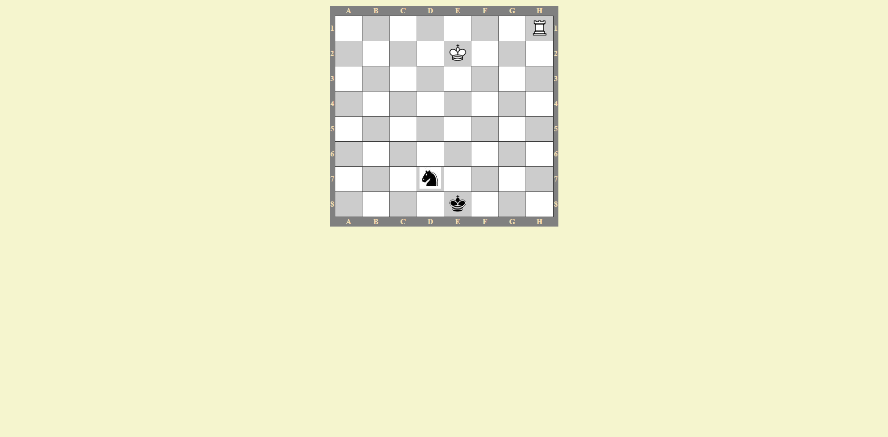
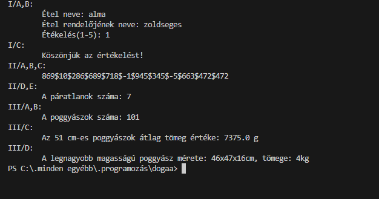
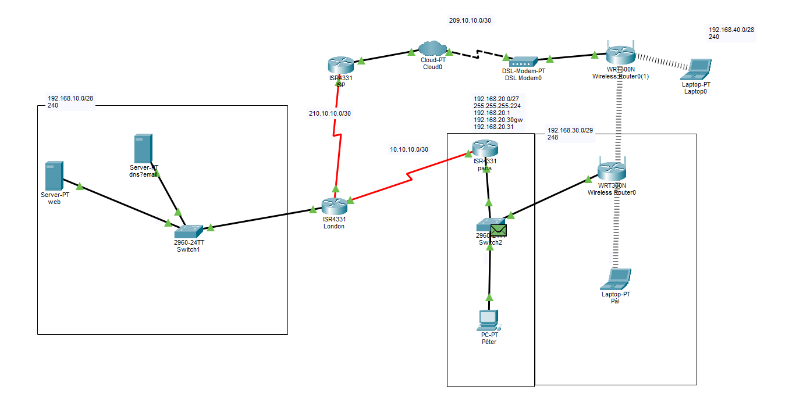
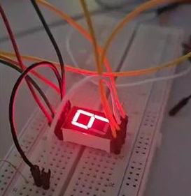

Webprogramozás
Sakk tábla
Készült: 2025. November
A feladat a sakk tábla megjelenítése HTML és CSS segítségével.
Forrás: Megtekintés GitHubon

Programozási alapok
Osztályok dolgozat
Készült: 2025. December
Az osztályok használata és az ágazati alapvizsgára gyakorlás Python nyelven.
Forrás: Megtekintés GitHubon

Hálózat (Cisco)
Hálózati infrastruktúra
Készült: 2025. november
A feladat egy komplett hálózat kiépítése és konfigurálása volt Cisco Packet Tracer-ben.

Bevezetés az elektronikába
Visszaszámláló kijelző
Készült: 2025. november
A feladat egy hét szegmenses kijelző felépítése volt, amely visszaszámlálást végez.
